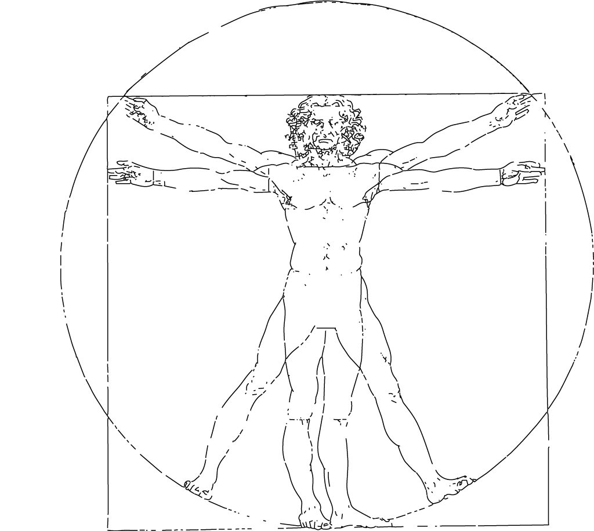
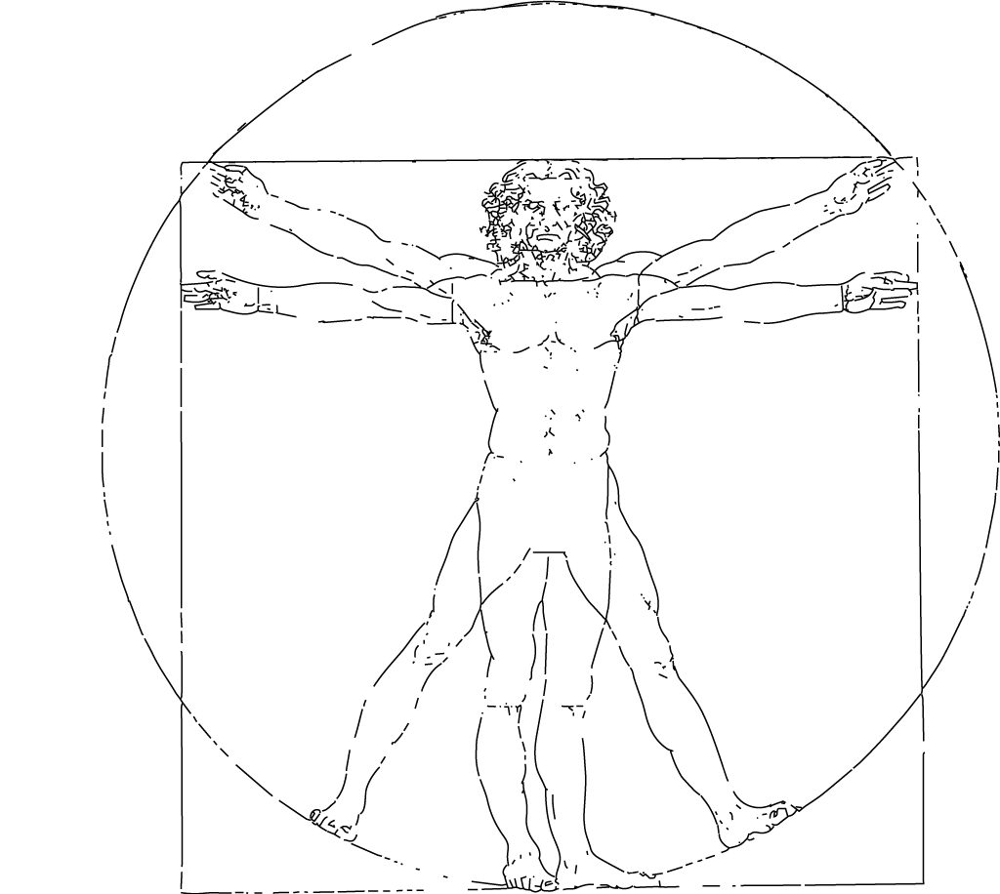
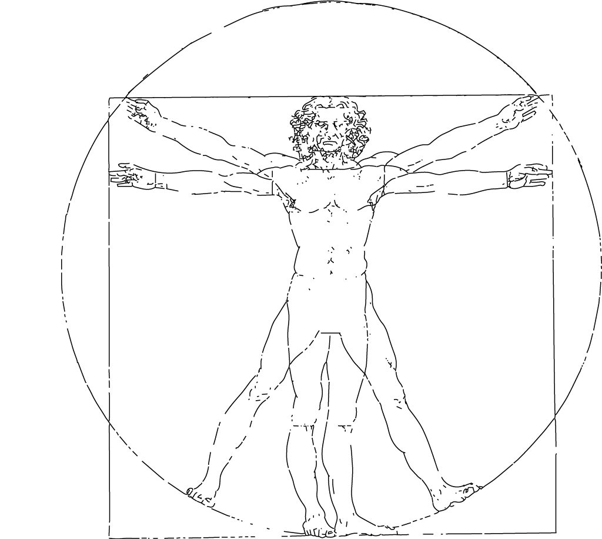
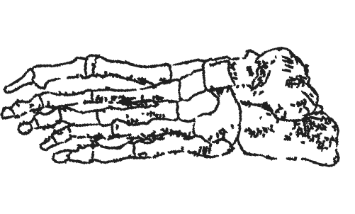

hands
head
arm
neck
wrist
elbow
armpit
chest
waist
belly
hip
leegs
knee
foot
The sounds of anatomy
In the most primordial times, humans were curious about our bodies. The curiosity about how and what we are made has made artists both create and steal cadavers to research answers. Even though science has evolved and made efficient methods to help us, humans continue the journey.
To collaborate on this quest, I attempted to understand how human beings speak about their own bodies in one of the most important and respected places for finding effective answers about humanity today: the songs on Spotify.
Armpits, knees, and necks: How do the most popular songs sing about our bodies? What do these songs say about us? What is the human relation to oneself?
ATTENTION: Some songs contain offensive words. Read more about the methodology below the page.

hands
head
arm
neck
wrist
elbow
armpit
chest
waist
belly
hip
leegs
knee
foot
Methodology
The collection of data on Spotify and analysis was done using Python.
To collect the data, the ten most popular songs on the platform were searched using body parts as keywords.
In order of popularity, the songs were listened to, and then their lyrics were read. Afterward, they were selected and grouped in the playlist below. It is possible to listen to them if you like this analysis. All the code and data are available here.
